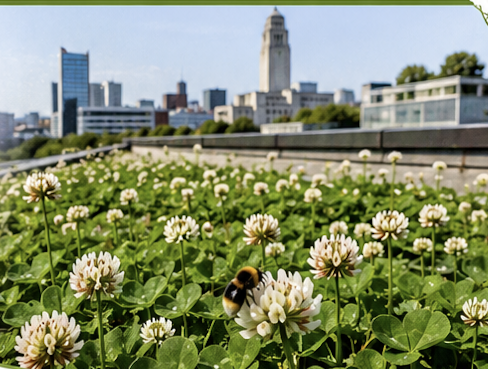
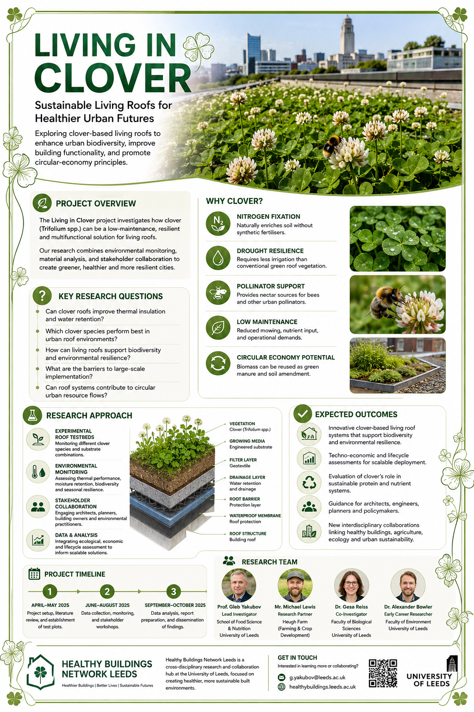

Exploring sustainable clover living roofs to enhance urban biodiversity, improve building functionality, and promote circular-economy principles.

The Living in Clover project explores the potential of clover (Trifolium spp.) as a versatile and sustainable option for living roofs. While traditional green roofs offer benefits like insulation and carbon capture, our research investigates how clover's unique properties can provide additional advantages for urban environments.
Clover has several distinctive qualities that make it an excellent candidate for living roofs:
Our research addresses several key questions:
Our research employs a mixed-methods approach that combines:
Project setup, literature review, and establishment of test plots
Data collection, monitoring, and stakeholder workshops
Data analysis, report preparation, and dissemination of findings
Lead Investigator
School of Food Science & Nutrition, University of Leeds
Research Partner
Heugh Farm (Farming & crop development)
Co-Investigator
Faculty of Biological Sciences, University of Leeds
Early Career Researcher
Faculty of Environment, University of Leeds

Interested in learning more about this project or exploring potential collaborations? Contact the principal investigator directly.
Exploring thermal comfort needs across different age groups to create more inclusive built environments.
Learn MoreInvestigating relationships between indoor and outdoor air quality in passive houses.
Learn MoreEvidence-based housing design and post-occupancy evaluation — do buildings actually work for the people inside them?
Learn MoreInterested in our work on sustainable building solutions? Join our network to stay updated on our research findings, events, and future funding opportunities.